핵심 화면
온보딩 카드 5장 · 홈 · 취향 선택 · 추천 결과 · 룩북 · 마이 · 10개

시작 · 계정
스플래시 · 로그인 · 회원가입 · 동의 · 권한 · 온보딩 완료 · 7개
추천 과정
상황 선택 · 추천 3안 · 저장 · 숨김 · 비슷한 룩 · 음악 · 투표 · 20개
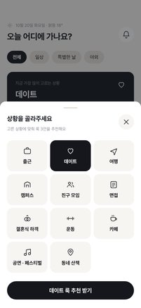
P2-1 · 상황 선택 시트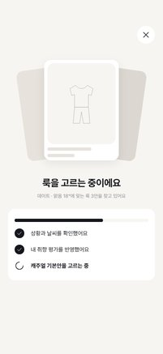
P2-2 · 로딩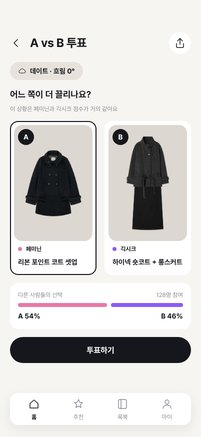
P2-3 · A vs B 투표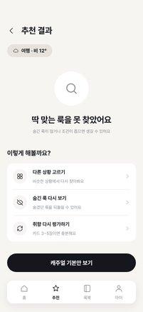
P2-4 · 추천 없음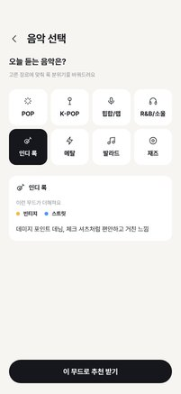
P2-5 · 음악 선택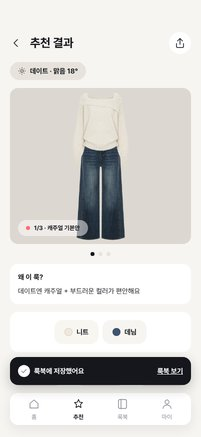
P2-6 · 저장 완료 토스트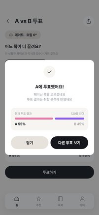
P2-7 · 투표 완료 팝업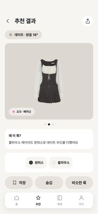
P2-8 · 추천 결과 2/3안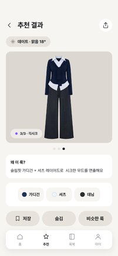
P2-9 · 추천 결과 3/3안P2-10 · 숨김 토스트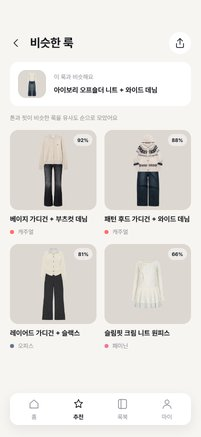
P2-11 · 비슷한 룩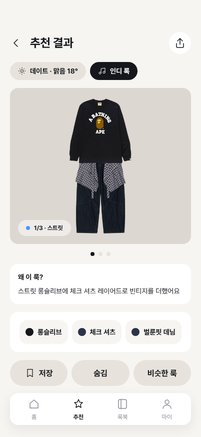
P2-12 · 음악 반영 추천 결과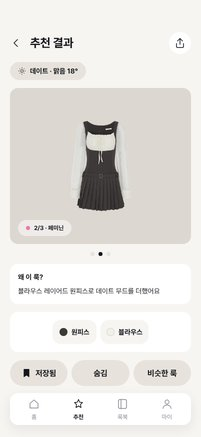
P2-8b · 추천 결과 2/3안 (저장됨)P2-9b · 추천 결과 3/3안 (저장됨) P2-10b · 숨김 토스트 (저장됨)
P2-10b · 숨김 토스트 (저장됨)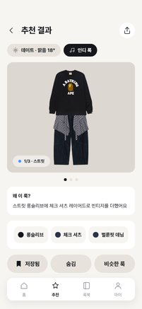
P2-12b · 음악 반영 추천 결과 (저장됨)P2-8c · 추천 결과 2/3안 (저장 완료 토스트)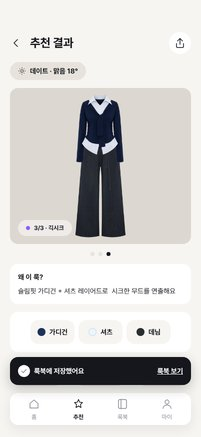
P2-9c · 추천 결과 3/3안 (저장 완료 토스트)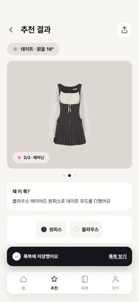
P2-10c · 숨김 토스트 (저장 완료 토스트)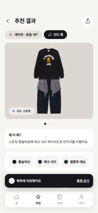
P2-12c · 음악 반영 추천 결과 (저장 완료 토스트)룩북 · 마이 · 설정
룩 상세 · 아이템 정보 · 설정 · 로그아웃 · 탈퇴 · 10개
선택 상태
선택 전 / 다른 선택 상태 화면 · 10개
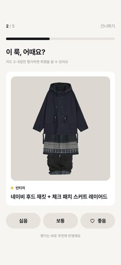
1b · 온보딩 (좋음 누르기 전)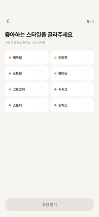
3b · 취향 선택 (선택 전)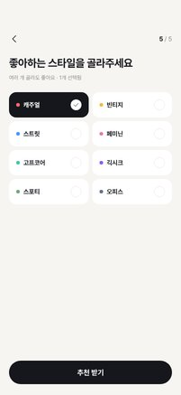
3c · 취향 선택 (캐주얼만 선택)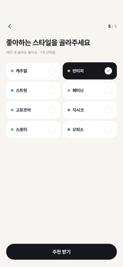
3d · 취향 선택 (빈티지만 선택)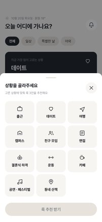
P2-1b · 상황 선택 시트 (선택 전)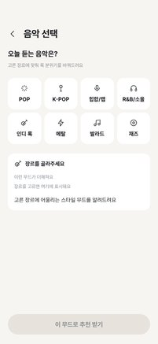
P2-5b · 음악 선택 (선택 전)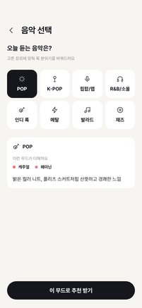
P2-5c · 음악 선택 (POP 기본 선택)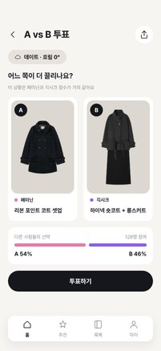
P2-3b · A vs B 투표 (선택 전)P2-3c · A vs B 투표 (B 선택)P2-7b · 투표 완료 팝업 (B 투표)